Maven：依赖管理与项目构建
初始Maven
介绍
Maven 是一款用于管理和构建Java项目的工具，是Apache旗下的一个开源项目 。
Apache 软件基金会，成立于1999年7月，是目前世界上最大的最受欢迎的开源软件基金会，也是一个专门为支持开源项目而生的非盈利性组织。
开源项目：https://www\.apache\.org/index\.html\#projects\-list
那我们之前在JavaSE阶段，没有使用Maven，依然可以构建Java项目。 我们为什么现在还要学习Maven呢 ? 那接下来，我们就来聊聊Maven的作用。
Maven的作用
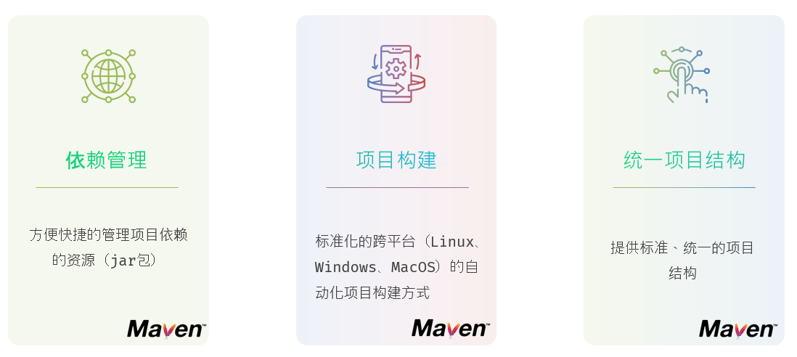
依赖管理
方便快捷的管理项目依赖的资源(jar包)，避免版本冲突问题。
1). 使用maven前
创建一个maven项目安装前置 => quickstrat 实现快速配置 src项目;
我们项目中要想使用某一个jar包，就需要把这个jar包从官方网站下载下来，然后再导入到项目中。然后在这个项目中，就可以使用这个jar包了。
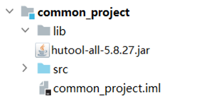
2). 使用maven后
当使用maven进行项目依赖(jar包)管理，则很方便的可以解决这个问题。 我们只需要在maven项目的pom.xml文件中，添加一段如下图所示的配置即可实现。
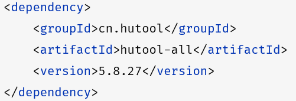
在maven项目的配置文件中，加入上面这么一段配置信息之后，maven会自动的根据配置信息的描述，去下载对应的依赖。 然后在项目中，就可以直接使用了。
项目构建
Maven还提供了标准化的跨平台的自动化构建方式。
如上图所示我们开发了一套系统，代码需要进行编译、测试、打包、发布等过程，这些操作是所有项目中都需要做的，如果需要反复进行就显得特别麻烦，而Maven提供了一套简单的命令来完成项目构建。
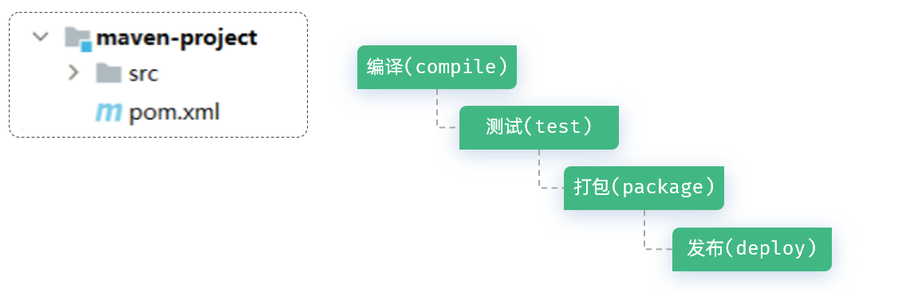
通过Maven中的命令，就可以很方便的完成项目的编译(compile)、测试(test)、打包(package)、发布(deploy) 等操作。
而且这些操作都是跨平台的，也就是说无论你是Windows系统，还是Linux系统，还是Mac系统，这些命令都是支持的。
统一项目结构
Maven 还提供了标准、统一的项目结构 。
1). 未使用Maven
由于java的开发工具呢，有很多，除了大家熟悉的IDEA以外，还有像早期的Eclipse、MyEclipse。而不同的开发工具，创建出来的java项目的目录结构是存在差异的，那这就会出现一个问题。
Eclipse创建的java项目，并不能直接导入IDEA中。 IDEA创建的java项目，也没有办法直接导入到Eclipse中。
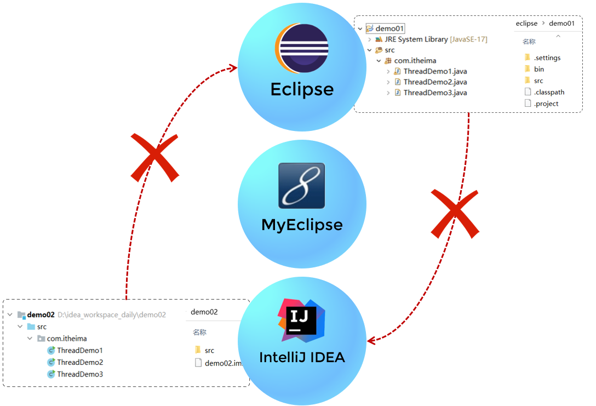
2). 使用Maven
而如果我们使用了Maven这一款项目构建工具，它给我们提供了一套标准的java项目目录。如下所示：
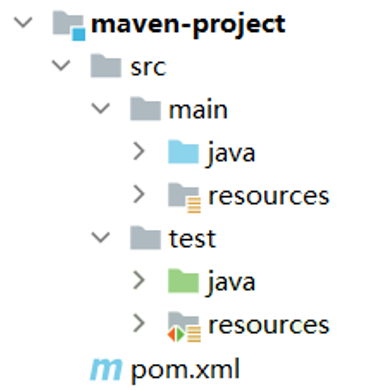
也就意味着，无论我们使用的是什么开发工具，只要是基于maven构建的java项目，最终的目录结构都是相同的，如图所示。 那这样呢，我们使用Eclipse、MyEclipse、IDEA创建的maven项目，就可以在各个开发工具直接直接导入使用了，更加方便、快捷。
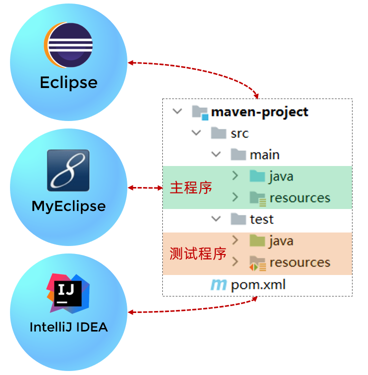
在maven项目的目录结构中
main目录下存放的是项目的源代码 ;
test目录下存放的是项目的测试代码。
而无论是在main还是在test下，
都有两个目录，
一个是java，用来存放源代码文件；
另一个是resources，用来存放配置文件。
最后呢，一句话总结一下什么是Maven。 Maven就是一款管理和构建java项目的工具。
Maven的内容，我们进行了分层的设计和讲解，分为两个部分：Maven核心和Maven进阶。 那今天，我们先来讲解Maven核心部分的内容，在Web开发的最后，我们再来讲解Maven进阶部分的内容。
Maven概述
Maven介绍
Apache Maven是一个项目管理和构建工具，它基于项目对象模型(Project Object Model , 简称: POM)的概念，通过一小段描述信息来管理项目的构建、报告和文档。 pos.xml 文件 ;
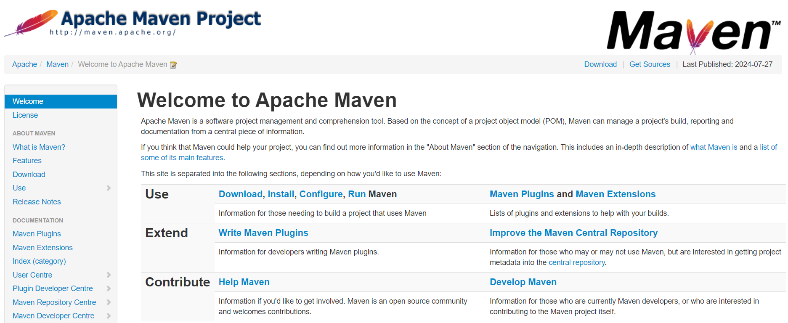
Maven的作用：
- 方便的依赖管理
- 统一的项目结构
- 标准的项目构建流程
Maven模型
- 项目对象模型 (Project Object Model)
- 依赖管理模型(Dependency)
- 构建生命周期/阶段(Build lifecycle & phases)
1). 构建生命周期/阶段(Build lifecycle & phases)
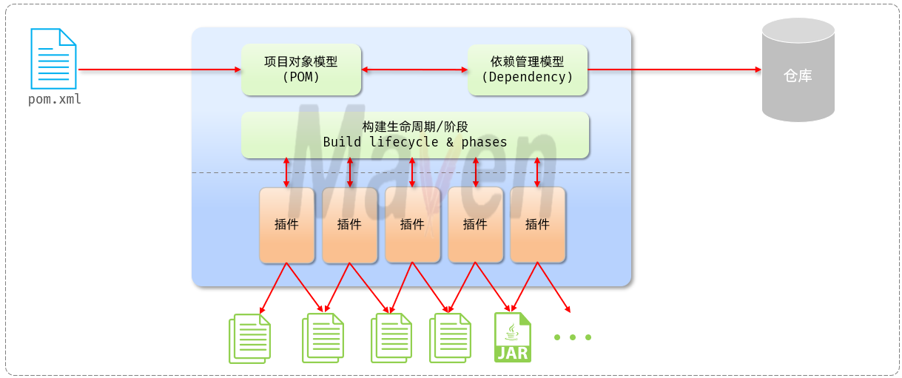
以上图中紫色框起来的部分，就是用来完成标准化构建流程 。当我们需要编译，Maven提供了一个编译插件供我们使用；当我们需要打包，Maven就提供了一个打包插件供我们使用等。
2). 项目对象模型 (Project Object Model)
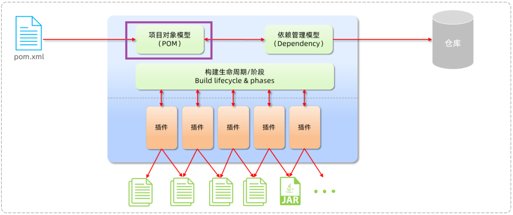
以上图中紫色框起来的部分属于项目对象模型，就是将我们自己的项目抽象成一个对象模型，有自己专属的坐标，如下图所示是一个Maven项目：
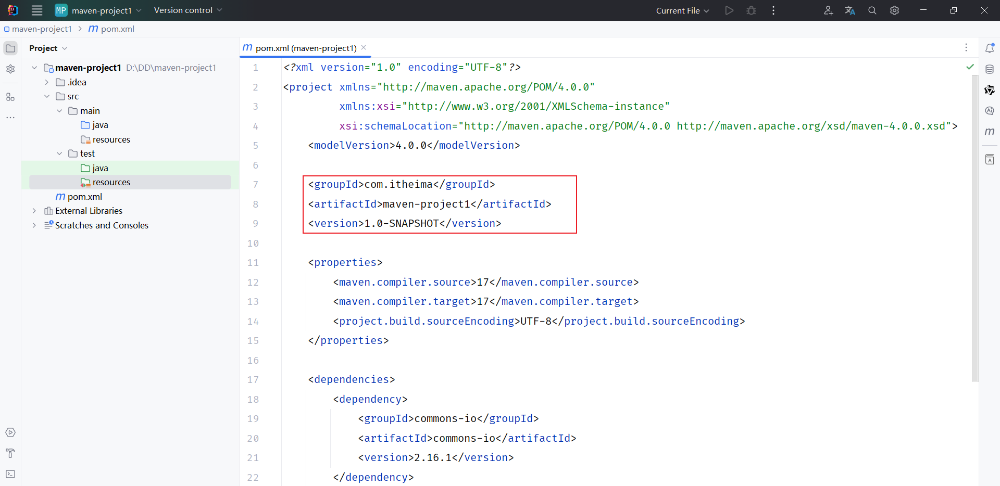
坐标，就是资源(jar包)的唯一标识，通过坐标可以定位到所需资源(jar包)位置。
坐标的组成部分：
描述当前的项目信息 :
- groupId: 组织名 ( 二级域名反写 ) com . 二级域名 ;
- arfitactId: 当前项目的名字
- Version: 当前maven项目的版本
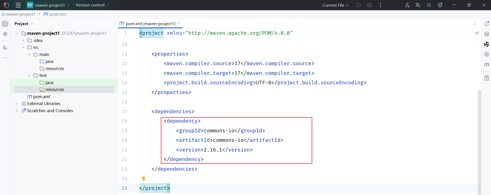
红色区域定义的 <properties> 内部放置 使用的 JDK 版本信息 和 使用到的JDK 的版本号 + 字符集 ;
之前我们项目中需要jar包时，直接就把jar包复制到项目下的lib目录，
3). 依赖管理模型(Dependency)
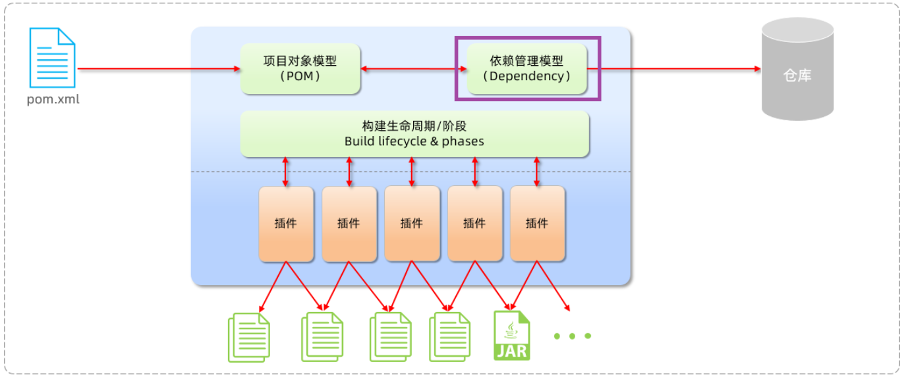
以上图中紫色框起来的部分属于依赖管理模型，是使用坐标来描述当前项目依赖哪些第三方jar包。
而现在我们只需要在pom.xml中配置依赖的配置文件即可。 而这个依赖对应的jar包其实就在我们本地电脑上的maven仓库中。
使用 jar 包的调用流程 , 先会去找本地仓库 ,若无 会从中央仓库 获取到本地仓库使用 ;
带远程仓库 : 在调用本地仓库 (false)=> 远程仓库 (false) => 中央仓库 ;
中央仓库远程下载文件太慢了 ;
如下图，就是本地的maven仓库中的jar文件：
一般 jar包的主要文件 都在本地的默认文件夹 内部 :
- Windows系统：
C:\Users\你的用户名\.m2\repository - macOS / Linux 系统：
/Users/你的用户名/.m2/repository
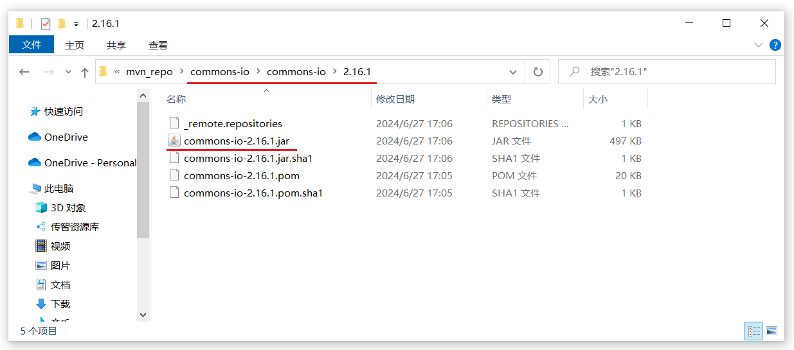
Maven仓库
仓库：用于存储资源，管理各种jar包
仓库的本质就是一个目录(文件夹)，这个目录被用来存储开发中所有依赖(就是jar包)和插件
Maven仓库分为：
- 本地仓库：自己计算机上的一个目录(用来存储jar包)
- 中央仓库：由Maven团队维护的全球唯一的。仓库地址：https://repo1\.maven\.org/maven2/
- 远程仓库(私服)：一般由公司团队搭建的私有仓库
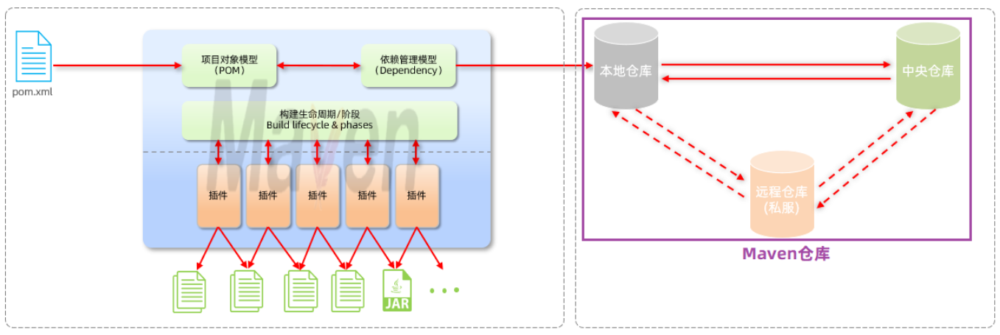
当项目中使用坐标引入对应依赖jar包后，
首先会查找本地仓库中是否有对应的jar包
如果有，则在项目直接引用
如果没有，则去中央仓库中下载对应的jar包到本地仓库
如果还可以搭建远程仓库(私服) 一般都是公司内部的仓库 ，将来jar包的查找顺序则变为： 本地仓库 --> 远程仓库--> 中央仓库
Maven安装
Maven 的本地仓库 :
幽默默认地址 :
- Windows系统：
C:\Users\你的用户名\.m2\repository - macOS / Linux 系统：
/Users/你的用户名/.m2/repository
认识了Maven后，我们就要开始使用Maven了，那么首先我们要进行Maven的下载与安装。
安装步骤
Maven安装配置步骤：
- 解压安装
- 配置仓库
- 配置阿里云私服
- 配置Maven环境变量
本地的全局 Maven 的配置文件在 :
C:\Program Files\JetBrains\IntelliJ IDEA 2025.2\plugins\maven\lib\maven3\conf
建议使用编译器实现打开 , 内部有很多的 注释样式 需要自己手动 配置 , default : 系统自带的
1). 解压 apache-maven-3.9.4-bin.zip（解压即安装）
解压缩后的目录结构如下：
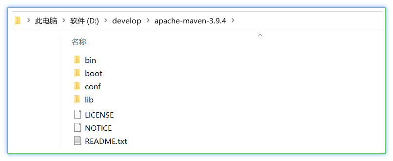
- bin目录 ： 存放的是可执行命令。（mvn 命令重点关注）
- conf目录 ：存放Maven的配置文件。（settings.xml配置文件后期需要修改）
- lib目录 ：存放Maven依赖的jar包。（Maven也是使用java开发的，所以它也依赖其他的jar包）
2). 配置本地仓库
- 在自己计算机上新一个目录（本地仓库，用来存储jar包）
- 创建这个文件夹单纯就是用来实现引入路径的 ;
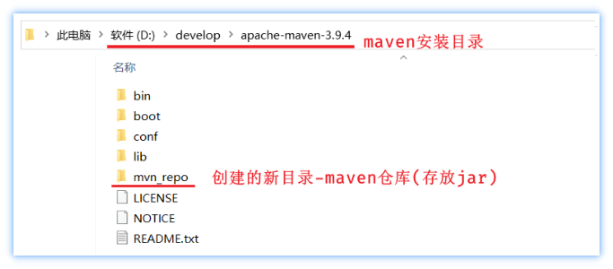
进入到conf目录下修改
settings.xml配置文件使用编译器，打开settings.xml文件，定位到53行
复制
<localRepository>标签，粘贴到注释的外面（55行）复制之前新建的用来存储jar包的路径，替换掉
<localRepository>标签体内容此处的路径不需要添加上引号 直接替代即可 ;
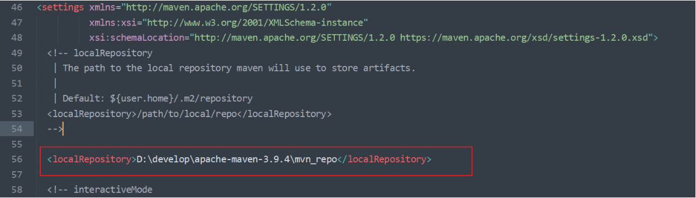
3). 配置阿里云私服
由于中央仓库在国外，所以下载jar包速度可能比较慢，而阿里公司提供了一个远程仓库，里面基本也都有开源项目的jar包。
在<mirrors>标签下为其添加子标签<mirror>，内容如下：
<mirror>
<id>alimaven</id>
<name>aliyun maven</name>
<url>http://maven.aliyun.com/nexus/content/groups/public/</url>
<mirrorOf>central</mirrorOf>
</mirror>
注意配置的位置，在<mirrors> ... </mirrors>中间添加配置。如下图所示：
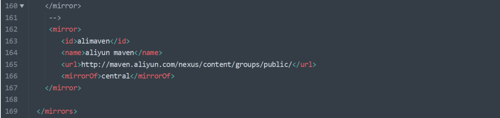
4). 配置环境****变量
Maven环境变量的配置类似于JDK环境变量配置一样
- 在系统变量处新建一个变量MAVEN_HOME。 MAVEN_HOME环境变量的值，设置为maven的解压安装目录
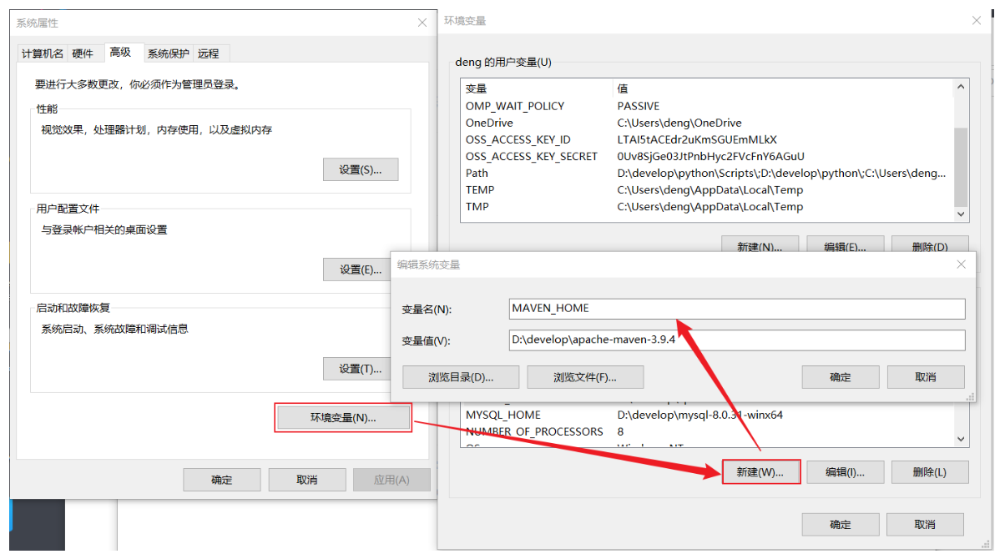
- 在Path中进行配置。 PATH环境变量的值，设置为：%MAVEN_HOME%\bin
- 通过使用 %其他的系统变量位置的命名% 实现 在定义的路径下 进行 操作 ;
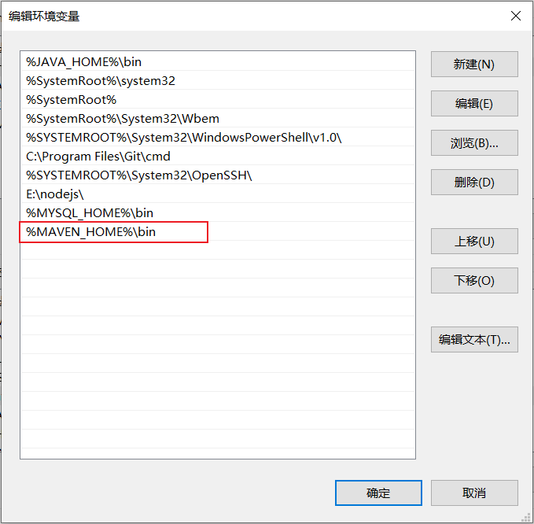
- 打开DOS命令提示符进行验证，出现如图所示表示安装成功 。
命令为：mvn -v
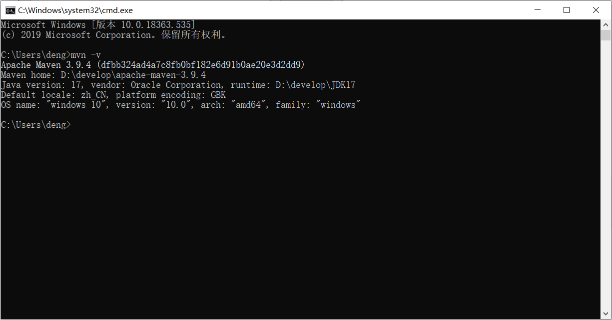
5). 配置关联的JDK版本(可选)
进入到conf目录下修改settings.xml配置文件，在 <profiles> </profiles>中增加如下配置:
<profile>
<id>jdk-17</id>
<activation>
<activeByDefault>true</activeByDefault>
<jdk>17</jdk>
</activation>
<properties>
<maven.compiler.source>17</maven.compiler.source>
<maven.compiler.target>17</maven.compiler.target>
<maven.compiler.compilerVersion>17</maven.compiler.compilerVersion>
</properties>
</profile>
IDEA集成Maven
我们要想在IDEA中使用Maven进行项目构建，就需要在IDEA中集成Maven，那么就需要在IDEA中配置与maven的关联。
创建Maven项目
编译器内部实现 Maven , JDK 版本的控制 实现
- 进入IDEA的欢迎页面
选择 IDEA中 File => close project => Customize=> All settings

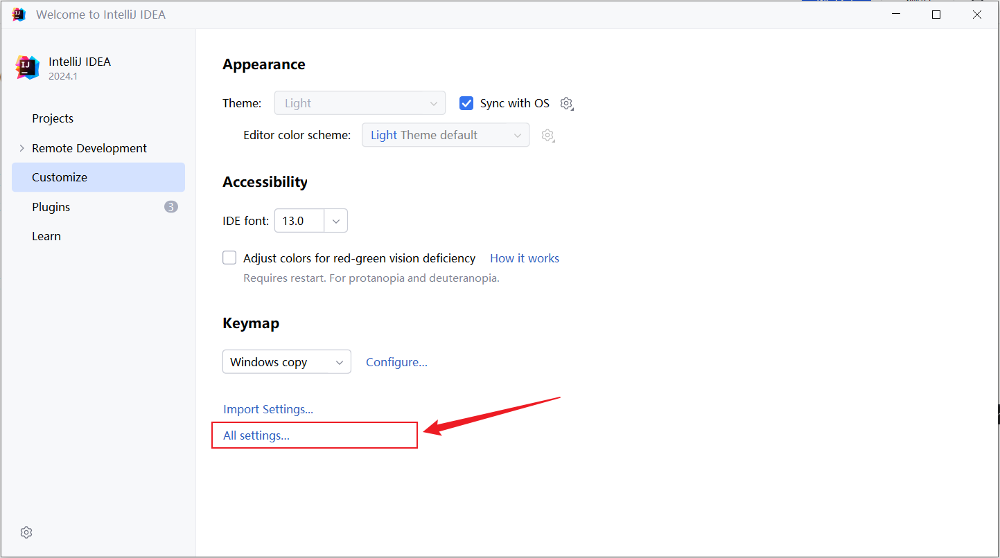
- 打开 All settings , 选择
Build,Execution,Deployment=>Build Tools=>Maven
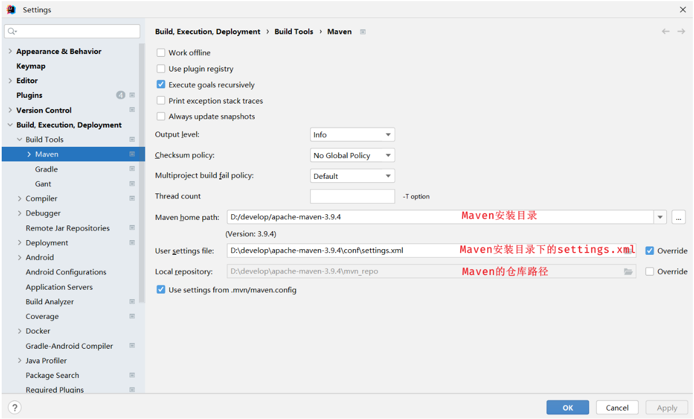
- 配置工程的编译版本为17
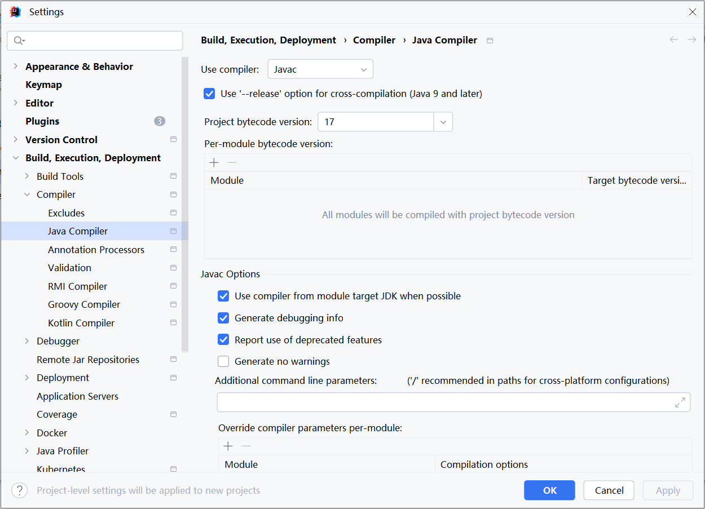
这里所设置的maven的环境信息，并未指定任何一个project，此时设置的信息就属于全局配置信息。 以后，我们再创建project，默认就是使用我们全局配置的信息。
从零开始创建一个Maven项目
- 创建一个空项目，命名为 web-project01
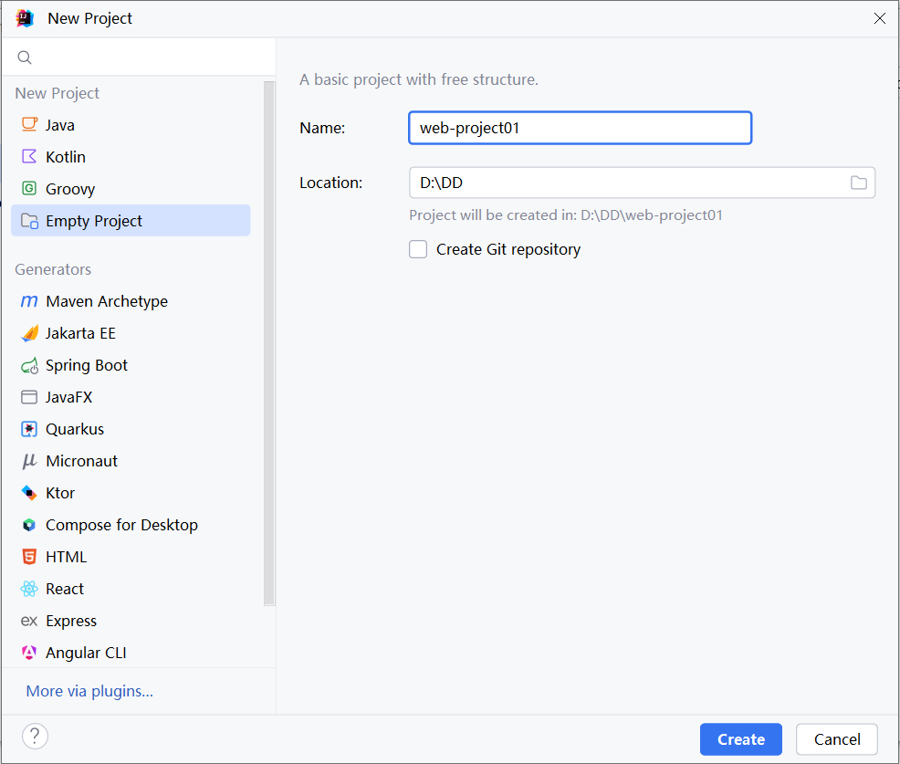
- 创建好项目之后，进入项目中，要设置JDK的版本号。选择小齿轮，选择
Project Structure

- 创建模块，选择Java语言，选择Maven。 填写模块的基本信息
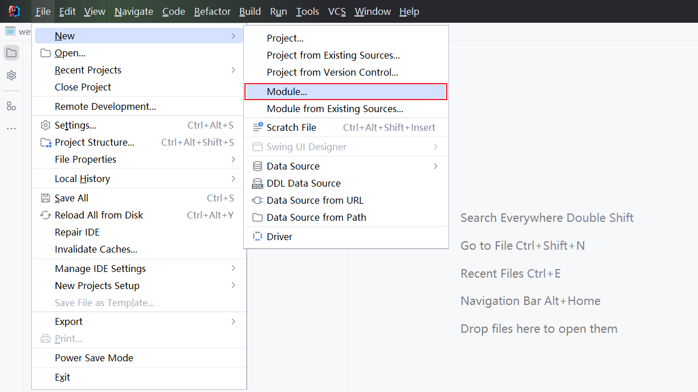
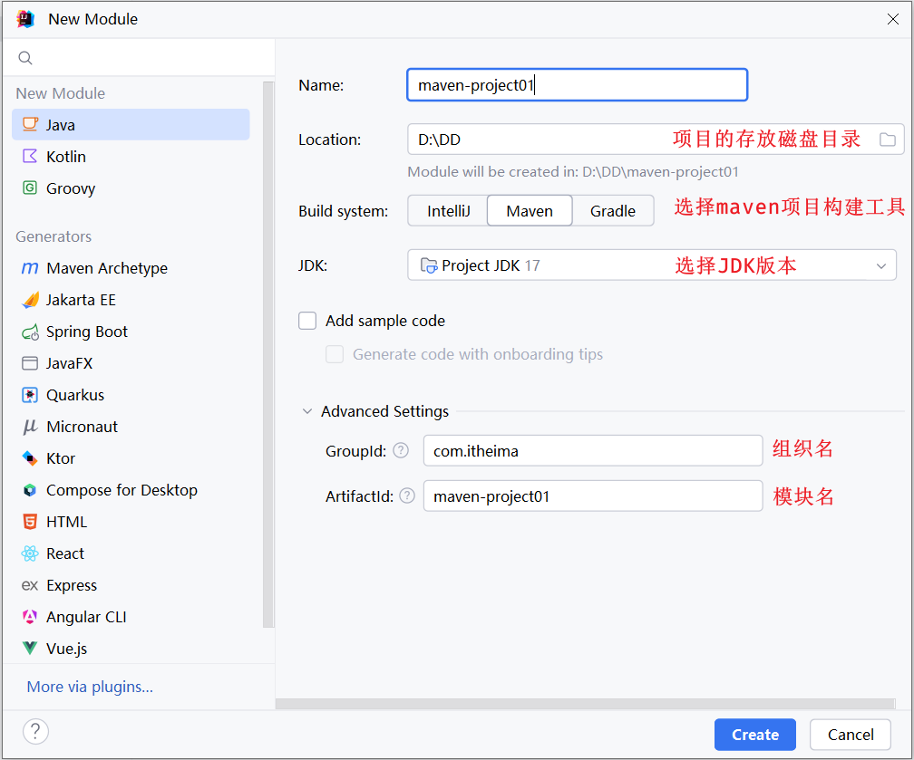
- 在maven项目中，创建HelloWorld类，并运行
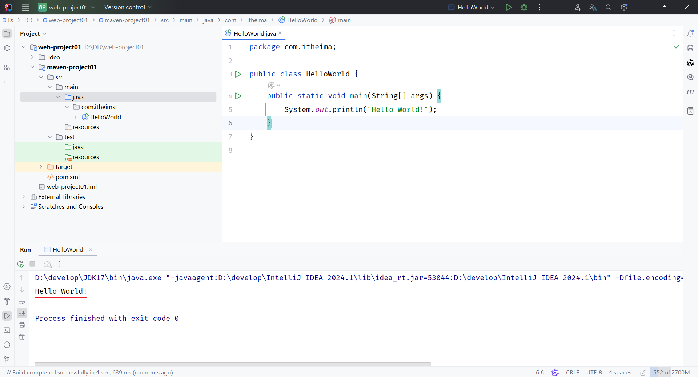
Maven项目的目录结构:
maven-project01
|--- src (源代码目录和测试代码目录)
|--- main (源代码目录)
|--- java (源代码java文件目录)
|--- resources (源代码配置文件目录)
|--- test (测试代码目录)
|--- java (测试代码java目录)
|--- resources (测试代码配置文件目录)
|--- target (编译、打包生成文件存放目录)
pom文件详解
POM (Project Object Model) ：指的是项目对象模型，用来描述当前的maven项目。
- 使用pom.xml文件来描述当前项目。 pom.xml文件如下：
<?xml version="1.0" encoding="UTF-8"?>
<project xmlns="http://maven.apache.org/POM/4.0.0"
xmlns:xsi="http://www.w3.org/2001/XMLSchema-instance"
xsi:schemaLocation="http://maven.apache.org/POM/4.0.0 http://maven.apache.org/xsd/maven-4.0.0.xsd">
<!-- POM模型版本 -->
<modelVersion>4.0.0</modelVersion>
<!-- 当前项目坐标 -->
<groupId>com.itheima</groupId>
<artifactId>maven-project01</artifactId>
<version>1.0-SNAPSHOT</version>
<!-- 项目的JDK版本及编码 -->
<properties>
<maven.compiler.source>17</maven.compiler.source>
<maven.compiler.target>17</maven.compiler.target>
<project.build.sourceEncoding>UTF-8</project.build.sourceEncoding>
</properties>
</project>
pom文件详解：
<project>：pom文件的根标签，表示当前maven项目<modelVersion>：声明项目描述遵循哪一个POM模型版本虽然模型本身的版本很少改变，但它仍然是必不可少的。目前POM模型版本是4.0.0
坐标 ：
<groupId>``<artifactId>``<version>定位项目在本地仓库中的位置，由以上三个标签组成一个坐标
<maven.compiler.source>：编译JDK的版本<maven.compiler.target>：运行JDK的版本<project.build.sourceEncoding>: 设置项目的字符集
Maven坐标
什么是坐标？
- Maven中的坐标是资源的唯一标识 , 通过该坐标可以唯一定位资源位置 ( .jar 包 )
- 使用坐标来定义项目或引入项目中需要的依赖
Maven坐标主要组成：
groupId：定义当前Maven项目隶属组织名称（通常是域名反写，例如：com.svhwliao）
artifactId：定义当前Maven项目名称（通常是模块名称，例如 order-service、goods-service）
version：定义当前项目版本号
SNAPSHOT: 功能不稳定、尚处于开发中的版本，即快照版本
RELEASE: 功能趋于稳定、当前更新停止，可以用于发行的版本
如下图就是使用坐标表示一个项目：
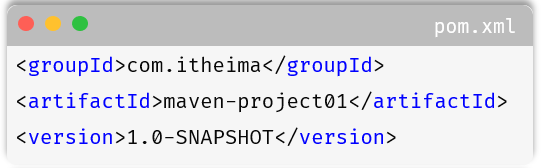
注意：
- 上面所说的资源可以是插件、依赖、当前项目。
- 我们的项目如果被其他的项目依赖时，也是需要坐标来引入的。
导入Maven项目
在文件夹中导入项目的全部文件 ;
导入到 Maven 格式 , 建议选择使用 pom 文件导入 ;
在IDEA中导入Maven项目，有两种方式。
- 方式一：
File->Project Structure->Modules->Import Module->选择maven项目的pom.xml。
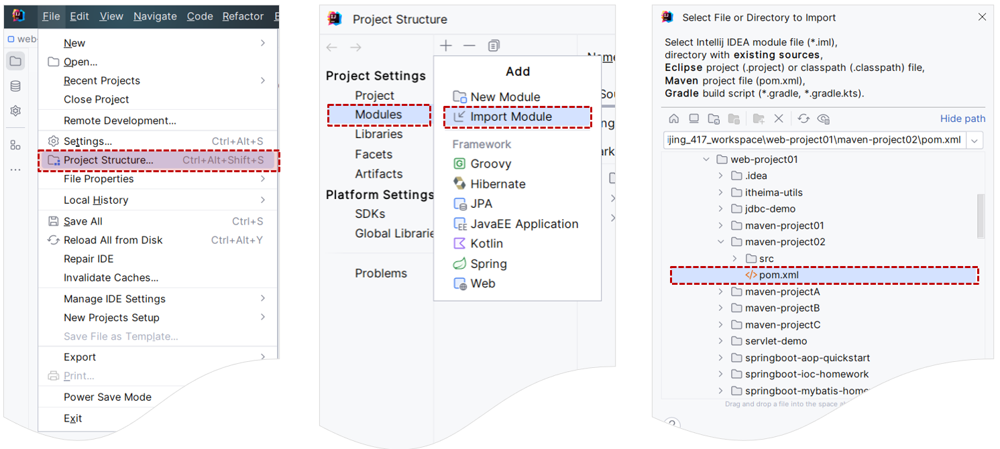
- 方式二：
Maven面板->+（Add Maven Projects）->选择maven项目的pom.xml。
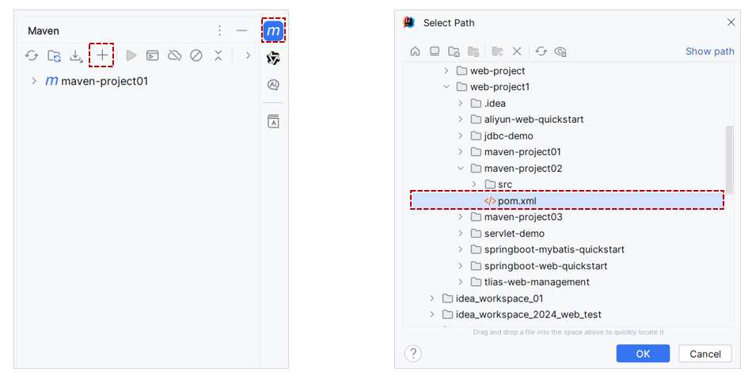
依赖管理
依赖配置
基本配置
依赖：指当前项目运行所需要的jar包。一个项目中可以引入多个依赖：
例如：在当前工程中，我们需要用到logback来记录日志，此时就可以在maven工程的pom.xml文件中，引入logback的依赖。具体步骤如下：
- 在pom.xml中编写
<dependencies>标签 - 在
<dependencies>标签中使用<dependency>引入坐标 - 定义坐标的
groupId、artifactId、version
<dependencies>
<!-- 依赖 : spring-context -->
<dependency>
<groupId>org.springframework</groupId>
<artifactId>spring-context</artifactId>
<version>6.1.4</version>
</dependency>
</dependencies>
- 点击刷新按钮，引入最新加入的坐标
刷新依赖：保证每一次引入新的依赖，或者修改现有的依赖配置，都可以加入最新的坐标
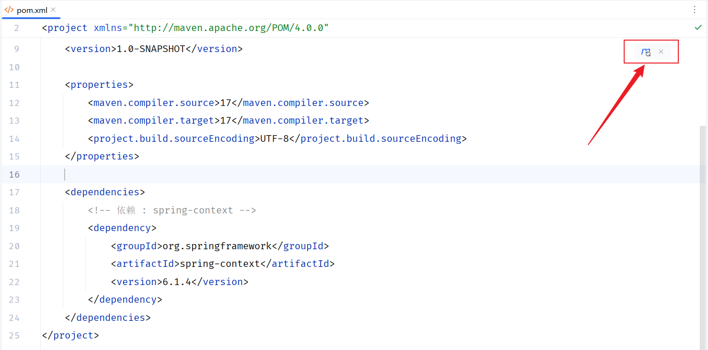
注意事项：
- 如果引入的依赖，在本地仓库中不存在，将会连接远程仓库 / 中央仓库，然后下载依赖（这个过程会比较耗时，耐心等待）
- 如果不知道依赖的坐标信息，可以到mvn的中央仓库（https://mvnrepository\.com/）中搜索
查找依赖
- 利用中央仓库搜索的依赖坐标，以常见的logback-classic为例。
- 使用的是 Alt + Insert : 调用 中央仓库查找 ;

- 利用IDEA工具搜索依赖，以常见的logback-classic为例。
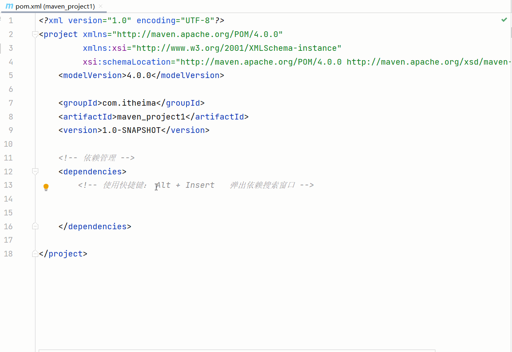
- 熟练上手maven后，快速导入依赖，以常见的logback-classic为例。

依赖传递
我们上面在pom.xml中配置了一项依赖，就是spring-context，但是我们通过右侧的maven面板可以看到，其实引入进来的依赖，并不是这一项，有非常多的依赖，都引入进来了。我们可以看到如下图所示：

为什么会出现这样的现象呢? 那这里呢，就涉及到maven中非常重要的一个特性，那就是Maven中的依赖传递。
所谓maven的依赖传递，指的就是如果在maven项目中，A 依赖了B，B依赖了C，C依赖了D，那么在A项目中，也会有C、D依赖，因为依赖会传递。
那如果，传递下来的依赖，在项目开发中，我们确实不需要，此时，我们可以通过Maven中的排除依赖功能，来将这个依赖排除掉。
排除依赖
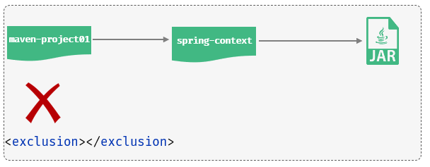
- 排除依赖：指主动断开依赖的资源，被排除的资源无需指定版本。
- 配置形式如下：
<dependency>
<groupId>org.springframework</groupId>
<artifactId>spring-context</artifactId>
<version>6.1.4</version>
<!--排除依赖, 主动断开依赖的资源-->
<exclusions>
<exclusion>
<groupId>io.micrometer</groupId>
<artifactId>micrometer-observation</artifactId>
</exclusion>
</exclusions>
</dependency>
依赖排除示例：
- 默认通过maven的依赖传递，传递下来了
micrometer-observation的依赖。
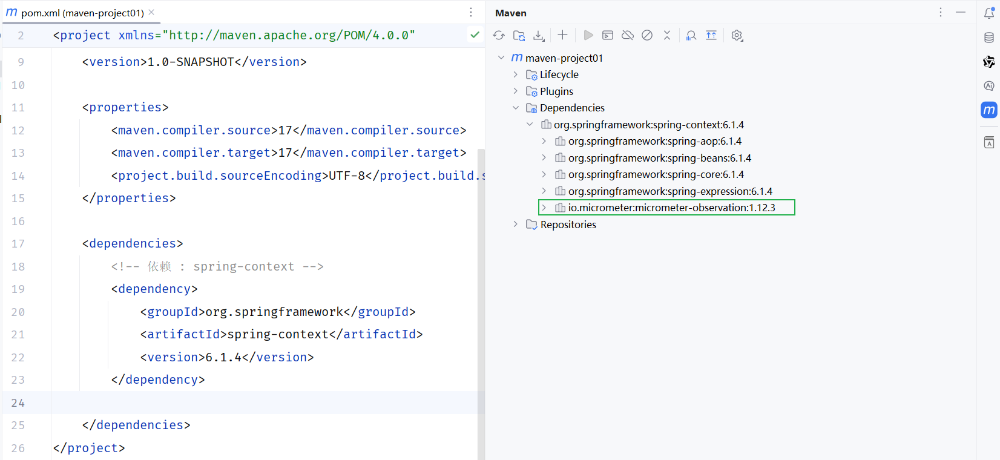
- 加入排除依赖的配置之后，该依赖就被排除掉了。
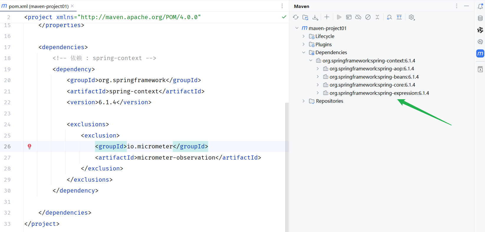